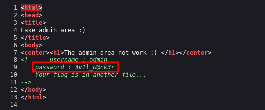
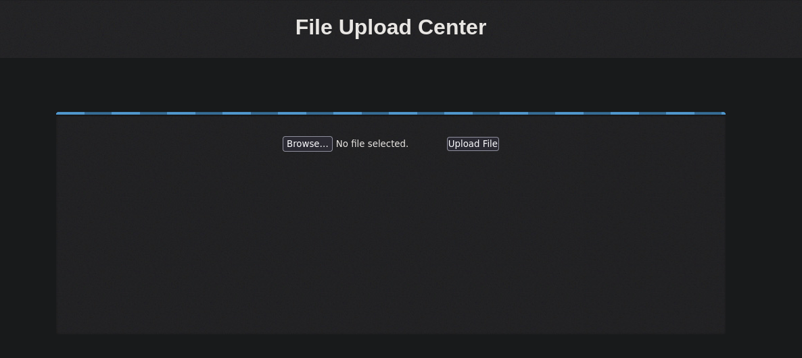

JisCTF
Posted on February 27, 2024
Hacemos un escaneo de puertos con nmap.
nmap -p- --open -n --min-rate 5000 -sVC -Pn -vvv ipVcictima -oN targeted

Como vemos, el escaneo de nmap nos muestra que hay un robots.txt, entramos y vemos diferentes directorios web.

Revisando los diferentes directorios encontramos unas credenciales en el codigo fuente del directorio admin_area.
Una vez tenemos credenciales nos vamos al login y nos logeamos con las credenciales que hemos encontrado. Encontramos un gestor de subida de archivos sospechoso.
Nos creamos un archivo de prueba test.txt y lo subimos al gestor de subida de archivos. Podemos visualizar el archivo test.txt en el directorio uploades_files que tambien encontramos en el robots.txt